1. Tvorba sledi
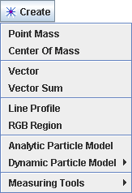
Novo sled tvorimo z izbiro želenega tipa sledi z gumbom Tvori v menuju na orodni vrstici ali z menujem Sledi|Nova v menujski vrstici. Novo tvorjena sled je avtomatsko izbrana za označevanje.
2. Označevanje
sledi
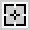
Označevanje sledi se nanaša proces označevanja njenega položaja v vsaki sličici video izrezka. Sledi masnih točk so posebne, saj jih lahko označujemo bodisi ročno bodisi avtomatično z uporabo avtomatskega sledilca. Vse druge sledi moramo označevati ročno s pomočjo križnega kurzorja (zgoraj je prikazan približno dvakrat povečan). Ročno označujemo tako, da pritiskamo na tipko shift in z miško kliknemo na opazovano lastnost medtem, ko se video avtomatsko pomika po video izrezku. Ne preskakujmo sličic--če bi jih, ne bi mogli določati hitrosti in pospeškov.
Pri označevanju masnih točk in vektorskih sledi lahko pritisnemo na tipko Enter namesto z miško in tako označimo natančno isti položaj kot v predhodnem koraku. To je uporabno pri označevanju mirujočih predmetov.
Označujemo v glavnem pogledu na video. Za bolj natančno označevanje lahko sliko do 8 krat povečamo s povečevalom ali z desnim klikom na videoin izbiro želenega nivoja povečanja.
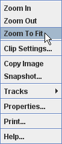
Pri različnih tipih sledi se zahteve označevanja lahko razlikujejo. Sledi vektorjev in prifilov črt terjajo vlečenje namesto klikanja. Masne točke in vektorske sledi pričakujejo označevanje vsakega koraka, pri sledeh odmika izhodišča, para kalibracijskih točk, profila črte in RGB področja pa zadošča označevanje ene same sličice. Sledi Težišča, vsote vektorjev, modela z delcem in sistema dveh teles pa se označujejo avtomatično.
V redkih primerih želimo bolj podrobno nadzorovati proces označevanja. Če ne želimo, da se bo video med označevanjem avtomatsko pomikal naprej, razkljukamo opcijo Avtomatski korak.
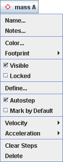
Vsaka sled ima gumb sledi, ki prikazuje njeno ime, barvo in izgled, ter menu sledi s postavkami za nastavljanje njenih lastnosti. Gumbe sledi vidimo tako na orodni vrstici kot v kontroli sledi. Do menujev sledi pridemo (a) s klikom na gumb sledi, (b) z izbiro sledi v menuju Sledi v menujski vrstici (c) z desnim klikom v glavni pogled z videom in z izbiro sledi v spustnem menuju Sledi.
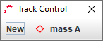
Kontrola sledi prikazuje gumb sledi za vsako sled, ki smo jo tvorili. To olajša izbiro sledi in nudi neposreden dostop do vseh menujev sledi.
Kontrolo sledi prikažemo tako, da kliknemo na gumb kontrole sledi na orodni vrstici.
5. Izbira sledi
Sledi lahko označujemo ali urejamo le, ko smo jih izbrali. Gumb sledi trenutno izbrane sledi vidimo v spodnjem delu orodne vrstice.
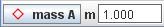
Če želimo izbrati drugo sled, kliknemo na njen gumb sledi v kontroli sledi ali izberemo enega od njenih korakov v pogledu z videom.
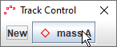 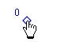
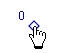
Izbiro sledi prekličemo z dvoklikom na video oziroma njegovo ozadje.
6. Podvajanje, kopiranje in uvoz sledi
Dvojnik obstoječe sledi naredimo z izbiro Kloniraj v menuju Tvori ali menuju Sled|Nova.
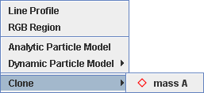
Sled lahko kopiramo iz enega v drug zavihek z izbiro sledi in njenim kopiranjem na odložišče s pomočjo menujske postavke Urejanjet|Kopiraj, nato pa jo prilepimo s postavko Urejanje|Prilepi.
Ker so merilni trak in osi sledi, jih tudi lahko kopiramo. Ko jih prilepimo, nadomestijo obstoječi trak ali osi v zavihku. Če ne izberemo nobene sledi, se kopira celoten pano programa tracker (video izrezek, koordinatni sistem in sledi).
Sledi lahko v odprt zavihek tudi neposredno uvozimo iz shranjenih datotek tracker z menujsko postavko Datoteka|Uvozi. Več o tem zasledimo v poglavju datoteke tracker.
7. Prilagajanje in dokumentiranje sledi
Vsaka sled je identificirana z njenim imenom, barvo, odtisom (vidnim izgledom) in opombami (opisnim komentarjem). Novo tvorjenim sledem so za te tri lastnosti dodeljene privzete vrednosti, odvisne od tipa sledi. Masna točka na primer je v začetku imenovana ”masa A” in je risana kot rdeč romb.
Ko izberemo neko sled, je na orodni vrstici prikazan gumb sledi, ki prikazuje njeno ime, izgled in barvo. Privzete vrednosti lahko spremenimo tako, da kliknemo na gumb sledi in v menuju sledi izberemo postavke Ime..., Barva... ali Izgled.
Opombe za sled vnesemo tako, da odpremo okno z opombami s klikom na gumb za opombe na desni strani orodne vrstice ali z izbiro Opombe... v menuju sledi. Ko vnašamo besedilo, polje porumeni in tako kaže, da spremembe še niso shranjene. Opombe shranimo tako, da kliknemo kjerkolimizven okna. Spremembe lahko razveljavimo s klikom na gumb Preklic.
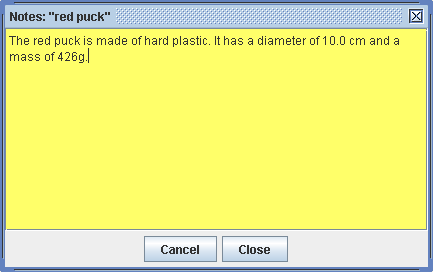
8. Nadzor vidljivosti